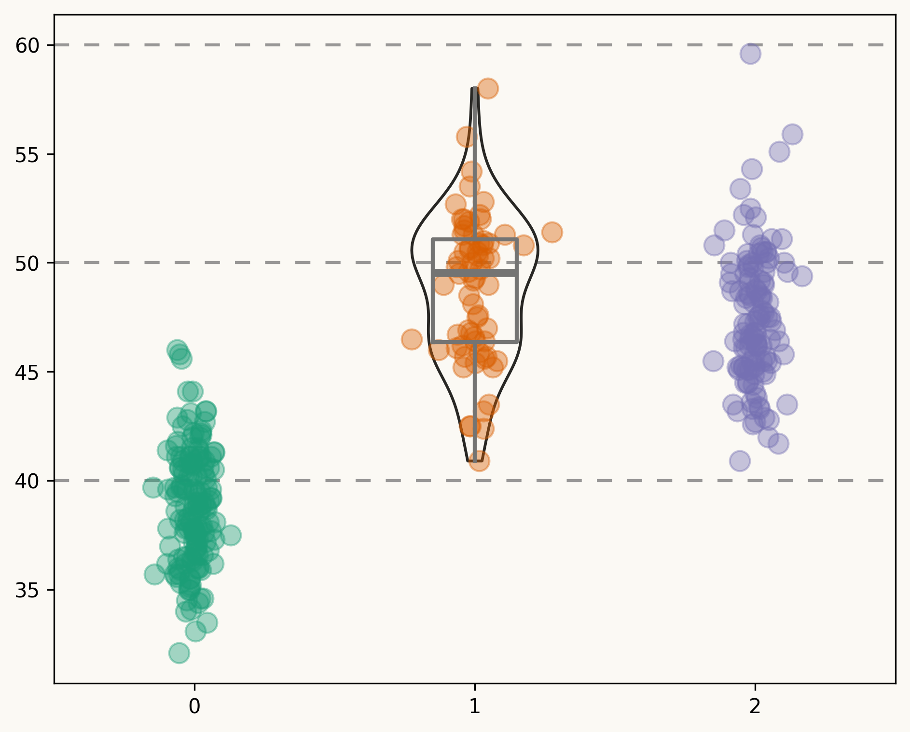

This is the analysis of Palmer penguins dataset. The dataset is available at Palmer penguins. 1-2 lines about the dataset.
We will explore the dataset, clean it, and prepare it for analysis. The dataset contains information about penguins, including their species, island, bill length, bill depth, flipper length, body. for our sake we will focus on the species, island, bill length, bill depth, flipper length, and body mass. we will use pandas, plotly and seaborn to explore the dataset. We will also use numpy and scipy for statistical analysis.
Load the dataset
Code
import pandas as pdimport numpy as npimport seaborn as snsimport plotly.express as pximport matplotlib.pyplot as pltimport plotly.io as pioimport matplotlib.pyplot as pltimport scipy.stats as st# Load the datasetpenguins = pd.read_csv("./data/penguins.csv")penguins.head()
Treating Missing Values
Code
# Check for missing valuesimport missingno as msnomsno.matrix(penguins, figsize=(8.5, 5), fontsize=11)
Based on the above plot, we can see that there are some missing values in the sex column. We will drop the rows with missing values for this analysis.
Drop rows with missing values
Code
# Drop rows with missing valuespenguins_cleaned = penguins.dropna()# Check the shape of the cleaned datasetpenguins_cleaned.shape# Check for missing values againmsno.matrix(penguins_cleaned, figsize=(8.5, 5), fontsize=11)
Exploratory Data Visualization
The section belore explores the dataset using visualizations. We will use seaborn and plotly to create visualizations of the dataset. We will also use matplotlib to create custom visualizations.
Data Selection for Visualization
The plot below shows the distribution of bill length for each species of penguins. We will use seaborn to create a violin plot to visualize the distribution of bill length for each species.
Code
# Get the species, sorted alphabeticallyspecies =sorted(penguins["species"].unique())# y_data is a list of length 3 containing the bill_length_mm values for each specie y_data = [penguins[penguins["species"] == specie]["bill_length_mm"].values for specie in species]# Create jittered version of "x" (which is only 0, 1, and 2)# More about this in the bonus track!jitter =0.04x_data = [np.array([i] *len(d)) for i, d inenumerate(y_data)]x_jittered = [x + st.t(df=6, scale=jitter).rvs(len(x)) for x in x_data]
Code
# Visualize the distribution of species# ColorsBG_WHITE ="#fbf9f4"GREY_LIGHT ="#b4aea9"GREY50 ="#7F7F7F"BLUE_DARK ="#1B2838"BLUE ="#2a475e"BLACK ="#282724"GREY_DARK ="#747473"RED_DARK ="#850e00"# Colors taken from Dark2 palette in RColorBrewer R libraryCOLOR_SCALE = ["#1B9E77", "#D95F02", "#7570B3"]# Horizontal positions for the violins. # They are arbitrary numbers. They could have been [-1, 0, 1] for example.POSITIONS = [0, 1, 2]# Horizontal linesHLINES = [40, 50, 60]fig, ax = plt.subplots(figsize= (7.5, 6))# Some layout stuff ----------------------------------------------# Background colorfig.patch.set_facecolor(BG_WHITE)ax.set_facecolor(BG_WHITE)# Horizontal lines that are used as scale referencefor h in HLINES: ax.axhline(h, color=GREY50, ls=(0, (5, 5)), alpha=0.8, zorder=0)# Add violins ----------------------------------------------------# bw_method="silverman" means the bandwidth of the kernel density# estimator is computed via Silverman's rule of thumb. # More on this in the bonus track ;)# The output is stored in 'violins', used to customize their appearenceviolins = ax.violinplot( y_data, positions=POSITIONS, widths=0.45, bw_method="silverman", showmeans=False, showmedians=False, showextrema=False);# Customize violins (remove fill, customize line, etc.)for pc in violins["bodies"]: pc.set_facecolor("none") pc.set_edgecolor(BLACK) pc.set_linewidth(1.4) pc.set_alpha(1)# Add boxplots ---------------------------------------------------# Note that properties about the median and the box are passed# as dictionaries.medianprops =dict( linewidth=4, color=GREY_DARK, solid_capstyle="butt");boxprops =dict( linewidth=2, color=GREY_DARK);ax.boxplot( y_data, positions=POSITIONS, showfliers =False, # Do not show the outliers beyond the caps. showcaps =False, # Do not show the caps medianprops = medianprops, whiskerprops = boxprops, boxprops = boxprops);# Add jittered dots ----------------------------------------------for x, y, color inzip(x_jittered, y_data, COLOR_SCALE): ax.scatter(x, y, s =100, color=color, alpha=0.4);fig.savefig("./output/figures/bill_length_species.png", format="png", dpi=300, bbox_inches="tight")

Distribution of bill length for each species of penguins